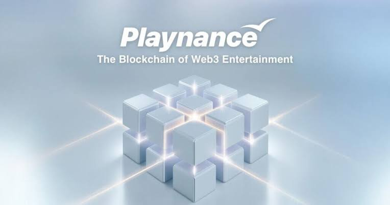

Free AI Website Maker
The blockchain industry is expanding beyond cryptocurrencies and decentralized finance into new areas such as online gaming, digital entertainment, prediction markets, and interactive communities. One project working to connect these sectors is Playnance, an ecosystem focused on bringing blockchain technology into familiar entertainment experiences.
Playnance aims to make Web3 entertainment easier to access by combining gaming platforms, blockchain infrastructure, digital payments, and a shared token economy. Rather than requiring users to understand complicated blockchain processes, its approach is designed to offer familiar interfaces while recording important transactions and economic activity on-chain.
At the center of the ecosystem are PlayBlock, its Layer 3 blockchain infrastructure, and G Coin, its utility token. Consumer-facing platforms such as PlayW3, PlayQuack, and Sharker demonstrate different ways the technology can be used.
This article explores how Playnance works, its major features, the role of G Coin, its potential opportunities, and the risks users should understand.
Playnance is a blockchain-based entertainment ecosystem designed to support gaming, trading, betting, and prediction-market experiences. Its goal is to connect different applications through shared infrastructure and a common economic system.
Traditional online entertainment platforms generally operate using centralized databases and payment systems. Users may have limited visibility into how transactions are processed, how rewards are calculated, or how platform economies operate. Blockchain technology offers another approach by recording transactions on a public network that can be independently examined.
Playnance uses this concept to create an environment where supported transactions, rewards, and settlement activities can be executed through smart contracts.
The project is structured around three main components:
1.PlayBlock: The blockchain execution layer.
2.G Coin: The token and economic layer.
3.Consumer platforms and partner portals: The applications through which users and businesses access the ecosystem.
Together, these components are intended to create a connected entertainment economy rather than a collection of unrelated applications.
One of the most important parts of Playnance is PlayBlock, its proprietary Layer 3 blockchain infrastructure.
PlayBlock is designed for applications that require frequent transactions and quick responses. Online games, prediction markets, and interactive entertainment services may involve numerous small transactions. A network designed for these activities needs to provide efficient processing without making every interaction complicated or expensive for users.
According to Playnance documentation, PlayBlock focuses on several features:
1. Gasless transactions
Blockchain transactions often require users to pay network fees. These costs can create friction, especially for people who are new to Web3. PlayBlock is designed to abstract gas fees from the user experience, allowing supported activities to take place without users manually managing gas payments.
2. Fast transaction settlement
Entertainment applications often depend on immediate feedback. A delayed transaction can interrupt gameplay or make a real-time market difficult to use. PlayBlock is designed to support fast settlement for these types of activities.
3. On-chain transparency
Blockchain records can make economic activity easier to verify. Playnance aims to record transactions, rewards, and other ecosystem operations on-chain so that users and partners can inspect supported activity.
4. Shared infrastructure
Instead of building separate blockchain systems for every application, Playnance connects its platforms through common infrastructure. This can help synchronize balances, rewards, and other economic information across supported services.
These features are intended to make blockchain-powered entertainment feel more like a familiar online service while retaining the transparency of on-chain execution.
G Coin is the digital token designed to support economic activity across the Playnance ecosystem. It connects users, applications, partners, rewards, and other platform functions.
According to the project's documentation, G Coin is intended to serve several purposes:
Supporting gameplay interactions and platform activity.
Enabling rewards and incentive mechanisms.
Facilitating partner revenue distribution.
Supporting treasury operations and ecosystem incentives.
Connecting economic activity across different applications.
The idea behind a shared token is to establish a common economic layer. Instead of every application developing a completely separate reward system, platforms can use the same underlying token infrastructure.
Playnance's published token materials describe a maximum supply of 77 billion G Coin. The project also describes mechanisms involving token allocation, vesting, and controlled circulation. Users should consult the latest official token documentation for current supply information, contract details, and distribution conditions.
It is important to remember that utility does not automatically create market value. A token's price can change significantly, and demand depends on actual usage, market conditions, liquidity, and confidence in the ecosystem.
PlayW3 is one of the consumer-facing platforms connected to Playnance. It focuses on social gaming and interactive entertainment.
The broader concept is to make digital gaming more accessible while connecting supported platform activity to the Playnance infrastructure. Users can participate through a familiar interface without needing to manage every blockchain process themselves.
PlayW3 also illustrates how the ecosystem can connect entertainment with token-based economic activity. G Coin is designed to support interactions and rewards across the platform.
For the ecosystem, consumer applications such as PlayW3 are important because infrastructure alone cannot create a successful entertainment network. The project also needs products that people find useful, engaging, and easy to access.
PlayQuack is another platform within the Playnance ecosystem. Project documentation describes it as a swipe-based social entertainment experience.
Its format aims to make interaction simple and familiar, taking inspiration from the quick, accessible experiences common in modern mobile applications.
The broader purpose of PlayQuack is to demonstrate that blockchain technology can support more than traditional crypto trading or complex decentralized applications. It can also operate behind lightweight entertainment experiences.
By connecting different consumer platforms to the same infrastructure, Playnance aims to build a wider network in which users can engage with multiple products through a shared economic system.
Sharker is another application associated with Playnance. It focuses on market-driven entertainment and prediction mechanics.
Prediction-based applications allow users to engage with questions about possible outcomes. Depending on the platform and market design, these questions can relate to financial events, sports, culture, or other real-world developments.
Sharker represents an effort to combine interactive prediction experiences with blockchain-based settlement and economic activity.
However, prediction markets and betting-related products can involve substantial financial and regulatory risks. Their availability and legal status vary by location, and users should understand the rules and risks before participating.
The Playnance model connects infrastructure, tokens, and applications.
First, users access a supported consumer platform or partner-operated portal. The application provides the interface for the entertainment experience.
Next, supported activities are processed through PlayBlock. The infrastructure is designed to handle transactions and settlement while reducing the need for users to interact directly with technical blockchain features.
G Coin provides the shared economic layer. Depending on the application and its supported features, the token can be used for interactions, incentives, rewards, or other ecosystem functions.
Finally, blockchain records provide a way to inspect supported transactions and economic movements.
This structure is intended to make the ecosystem easier to expand. New applications and partners can potentially use existing infrastructure instead of developing every technical and economic component independently.
Playnance is not designed only for individual users. Its infrastructure also supports business partnerships.
The project's documentation describes partner portals, white-label platforms, and affiliate programs. These models allow businesses, creators, and operators to participate in the ecosystem in different ways.
Partner-operated portals: Businesses can use Playnance infrastructure to develop branded or regional entertainment destinations.
White-label solutions: Operators can use existing technology and infrastructure to create platforms under their own branding.
Affiliate programs: Content creators, publishers, and other marketing partners can refer users and participate in revenue attribution programs.
These models may reduce the technical work required to launch a blockchain-powered entertainment service. They also give Playnance a potential route to expand beyond applications developed directly under its own consumer brands.
However, the success of these partnerships depends on real user demand, responsible operations, regulatory compliance, and the ability to maintain reliable services.
Playnance brings together several ideas that could be useful in the growing Web3 entertainment sector.
Simplified blockchain access: Gas abstraction and familiar interfaces may help reduce the technical barriers that discourage newcomers from using blockchain applications.
Connected applications: A shared infrastructure and token economy can create links between different entertainment products.
Transaction transparency: On-chain records can provide greater visibility into supported economic activity than systems that rely entirely on private databases.
Business opportunities: Partner and white-label models may help operators enter the Web3 market without building every component from scratch.
Multiple use cases: Gaming, social entertainment, prediction markets, and partner portals give the ecosystem several possible directions for growth.
These advantages describe the project's intended model. They should not be interpreted as guarantees of adoption, profitability, or long-term success.
Like every blockchain project, Playnance faces challenges that users and potential participants should evaluate.
Market volatility: G Coin is a crypto asset, and its market price may rise or fall significantly. Token utility does not protect holders from losses.
Adoption challenges: A connected ecosystem needs active users. The long-term value of its infrastructure depends on whether people continue using its applications and whether partners can attract sustainable audiences.
Competition: Playnance operates in a market that includes gaming platforms, blockchain networks, entertainment applications, and prediction-market services. It must continue developing products that stand out.
Technical risks: Smart contracts and blockchain infrastructure can contain vulnerabilities. Independent security assessments can reduce some risks but cannot eliminate them completely.
Regulatory uncertainty: Gaming, betting, prediction markets, and digital tokens are subject to different rules in different jurisdictions. Users should check whether a particular service is legally available where they live.
Token economics: Supply, vesting, incentives, liquidity, and demand can all influence a token's market performance. Readers should review official documentation rather than relying on promotional claims or social media discussions.
Understanding these risks is essential before using the platform, purchasing G Coin, or joining a partner program.
The future of Playnance will depend on its ability to turn its infrastructure into a sustainable and widely used entertainment ecosystem.
Its Layer 3 technology provides the foundation, while G Coin is intended to connect the economic activity of different applications. Consumer platforms and business partnerships provide ways for people and organizations to interact with that system.
If Playnance can attract active users, maintain reliable technology, expand useful partnerships, and operate responsibly across different markets, it may strengthen its position in blockchain-powered entertainment.
Nevertheless, the wider Web3 industry remains competitive and unpredictable. Development milestones, actual platform usage, transparent token information, and independent security reviews will be more meaningful indicators of progress than promotional promises alone.
Playnance is developing an interconnected blockchain entertainment ecosystem built around PlayBlock, G Coin, and applications such as PlayW3, PlayQuack, and Sharker. Its approach focuses on combining familiar digital experiences with on-chain transactions, shared infrastructure, and token-based economic activity.
The project's emphasis on gasless interactions, fast settlement, transparency, and partner participation reflects a broader effort to make Web3 technology more accessible.
However, its long-term success is not guaranteed. Adoption, competition, technical security, token economics, and regulation will all influence its development.
For anyone interested in blockchain gaming and Web3 entertainment, Playnance is a project worth researching. As with any crypto ecosystem, users should verify information through official documentation, understand the risks, and make decisions based on careful research rather than hype.
Free AI Website Maker